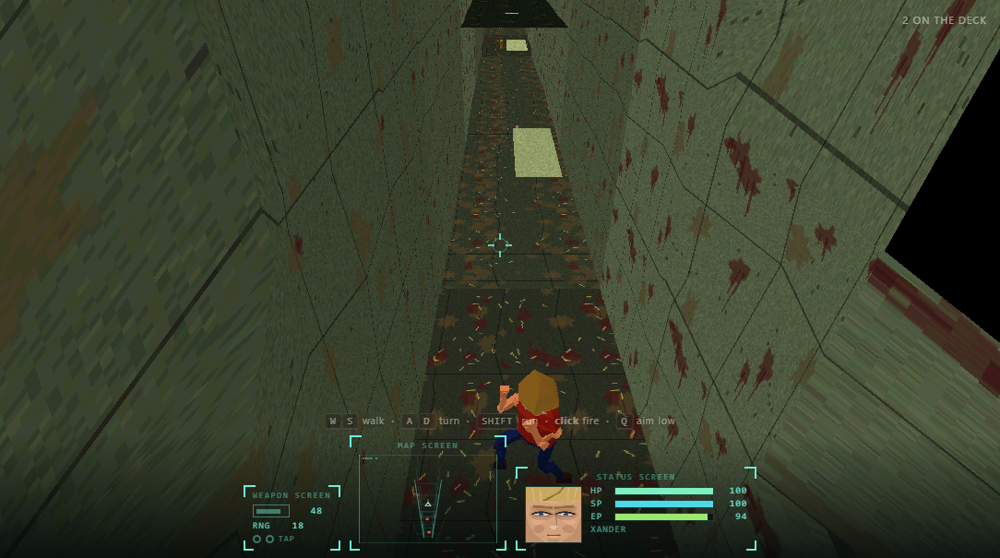

Farmy Evil Hills
Station Hesper-4 has missed three reporting cycles. The Space Farming Agency sends one inspector, because one inspector is cheaper than two.

What it is
Third-person survival horror in PS1-era 3D. Earth is failing, so the Agency ships farmers and livestock to candidate worlds to find out whether life holds there. On Venus something airborne got into the animals. It does not affect humans at all, which is worse than if it did: Xander is not sick, he is food.
How it plays
- Aim low. A mutated chicken bursts at 6.2 m/s and outruns your sprint. Take a leg off and it drops to 2.8 m/s and never catches you again. Emptying bolts into its body takes sixteen times as many.
- Shake it off. Anything that reaches you latches on, and your health drains faster the longer it holds. Alternate two keys, or hammer the button on a phone.
- The lift is the way out. Threats come from behind you and from the sides, never from the door — the corridor is an escape, not an arena.
- There is a cassette. Xander carries a walkman. It plays a D-dorian vamp, and it ducks when something is hunting you.
Made in the browser, for the browser
Every surface and every face in this game is generated at run time — there are no texture files to download. The sound is the one exception and it earns it: about 2.5 MB of real recorded effects and voice, fetched after the game is already playable, because synthesised horror sounds like a synthesiser. A link still opens into a playable game rather than into a download, and it runs on a phone.